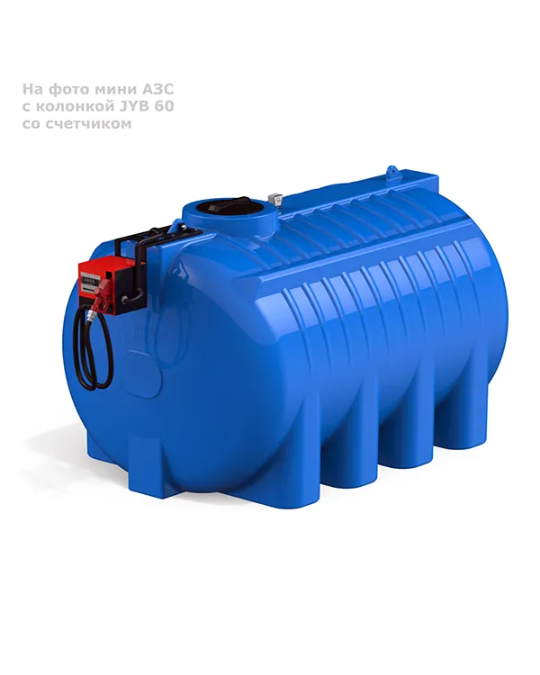
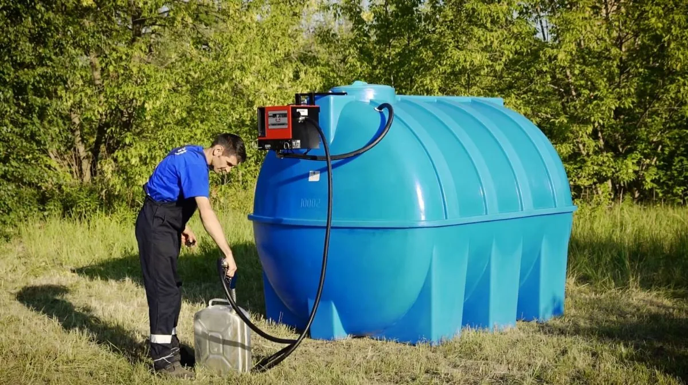
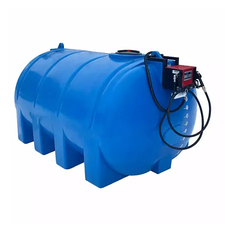
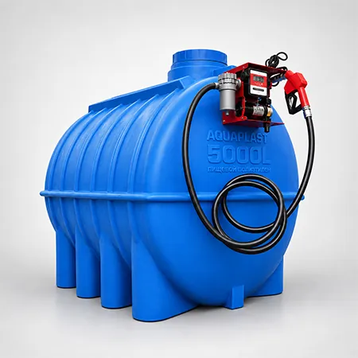
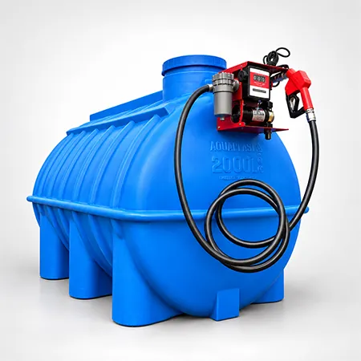
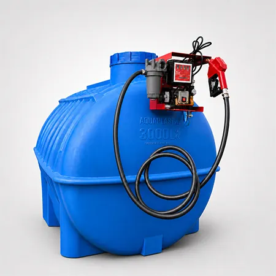

Мини АЗС G 8000 литров
Общие характеристики
| Объем, л | 8000 |
| Длина, мм | 3600 |
| Ширина, мм | 1980 |
| Высота, мм | 1880 |
| Транспортный объем, м³ | 13,40 |
| Диаметр крышки, мм | 450 |
| Диаметр горловины, мм | 400 |
| Вес, кг | 272 |
| Температура эксплуатации, °C | -20°C до +60°C |
| Материал | Полиэтилен |
| Напряжение, В | 220 |
| Производительность, л/мин | 56 |
| Длина шланга, м | 4 |
| Расходомер | К 33 |
Описание

ГОТОВОЕ РЕШЕНИЕ – ПОД КЛЮЧБЫСТРАЯ СБОРКА 2-3 ДНЯ
Мини АЗС G 8000 литров для дизельного топлива и солярки укомплектована горизонтальной пластиковой емкостью G 8000 литров с топливозаправочной колонкой и счетчиком Китай Премиум JYB60. Компактный заправочный модуль и насос устанавливается непосредственно на емкость с опорной рамой. Стандартно мы предлагаем модули 60 л/мин, а 70/100 л/мин доступны по запросу клиента.
Наши мини АЗС – оптимальный вариант для обеспечения постоянного запаса и удобной раздачи дизельного топлива. Особенно это касается предприятий, выполняющих работы на значительном расстоянии от трасс.
Мини АЗС наземного размещения. Предназначена для хранения, транспортировки дизельного топлива и нефтепродуктов, а так же для заправки железнодорожного транспорта, грузового автотранспорта, водного транспорта, военной техники, дизельных электрогенераторов, сельскохозяйственной и строительной техники, а так же легкового дизельного автотранспорта. Это практичный вариант, применяется практически во всех сферах деятельности: для домашнего использования, строительстве, промышленности, сельском хозяйстве и производстве.
ТОПЛИВОЗАПРАВОЧНЫЙ МОДУЛЬ
— Заправочная колонка: Китай Премиум JYB60
— Заборный шланг топлива из емкости
— Механический уровень измерения
— Донный фильтр для защиты от грубых примесей
— Крепление заправочной системы и фитинг
— Цельнометаллический корпус защищенный от коррозии
— Расходомер: контролирует количество заправляемого топлива
— Топливораздаточный пистолет с автоматическим отсечением
— Пистолетный держатель с рычагом запуска насоса
— Кабель с электрической вилкой
— Топливораздаточный шланг: 4 м
— Кронштейн: Крепеж
— Обратный клапан
В изготовлении емкости используется первичный пластик полиэтилен, низкой плотности высокого давления LLDPE. В состав не входят токсичные вещества или компоненты, которые вступают в химическую реакцию с дизельным топливом и нефтепродуктами, а так же водой и продуктами питания.
Емкость не подвергается коррозии и гниению, устойчива к ультрафиолетовому воздействию солнечных лучей, легко отчищается, не лопается и не деформируется при минусовой температуре, а так же не разлагается при взаимодействии агрессивных сред. Качество продукции соответствует санитарно-гигиеническим требованиям, подтверждено соответствующей документацией и сертификатами.
Мини АЗС возможно укомплектовать дополнительными отводами, увеличить длину раздаточного шланга, установить фильтр поглощающий воду, электро указатель уровня, закрытый контейнер, насос любой мощности от 60 до 150 л/мин с напряжением 12/24B.
Похожие товары



